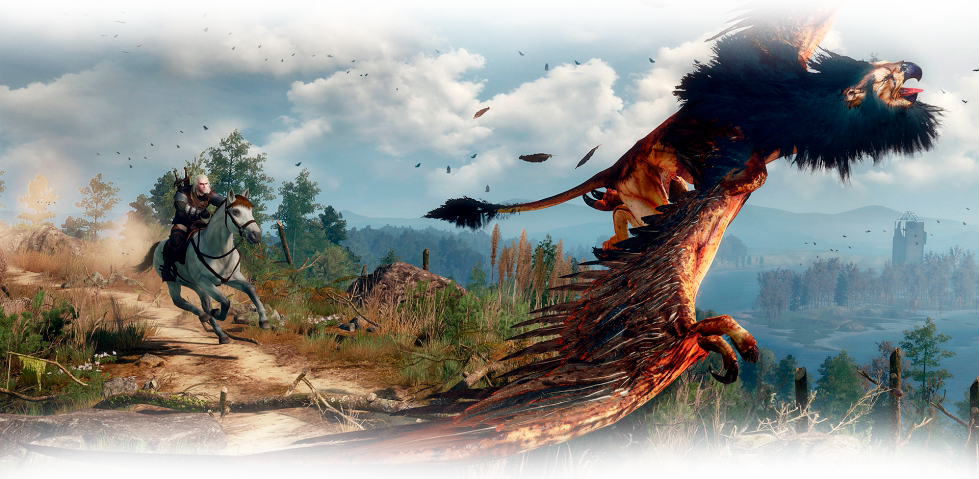
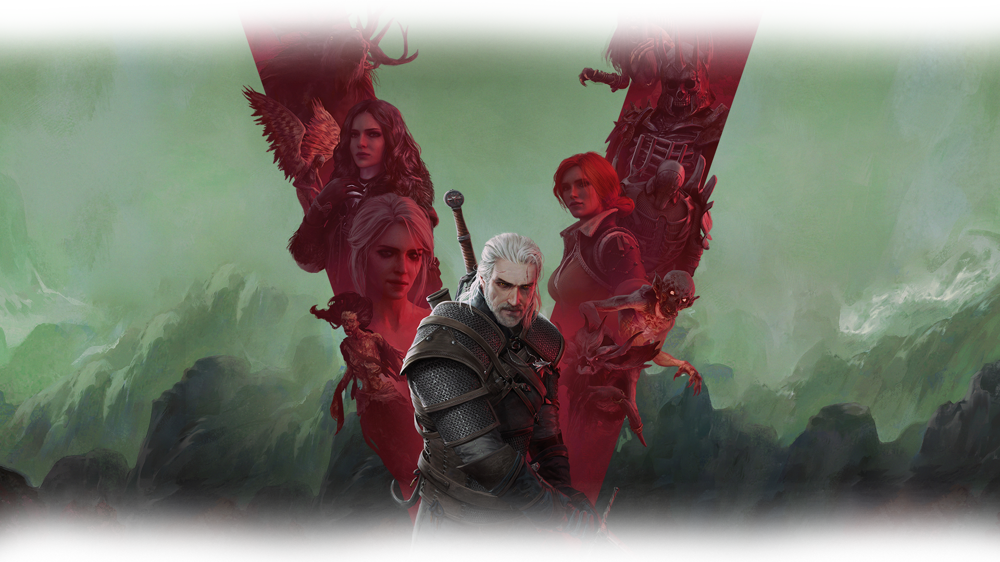

Ее открытым миром, полным возможностей
Завораживающими пейзажами, всепоглощающей атмосферой
Тщательной проработкой

Именно тебе решать, как будет развиваться история.
От твоего выбора
зависит жить кому-то...
...или умереть.
Вот главный выбр игры.
Кого ты выберешь?
А это песня Присциллы, под которую плачут все фанаты.
Она о любви Геларльта и Йеннифер.